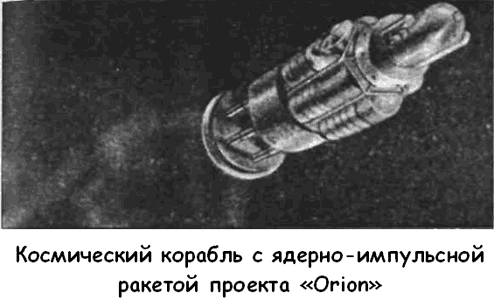

Проект «Orion»: истоки и итоги
В то время, когда космическая гонка только начиналась, в США начал разрабатываться проект космического корабля, способного доставить экспедицию из 60 человек к любой из планет Солнечной системы или даже к ближайшим звездам. Этот проект назывался «Орион» («Orion»).
Основой проекта была ядерно-импульсная ракета взрывного типа. Схема ее движения выглядела так. Космический корабль снабжается мощной стальной плитой, устанавливаемой за кормой. Взрывные устройства (ядерные бомбы) мощностью порядка одной килотонны должны выбрасываться специальным устройством из корабля назад через определенные интервалы времени и взрываться в 60 метрах от плиты.
Проект «Орион» был рожден в 1958 году фирмой «Дженерал Атомикс» («General Atomics»). Эта компания, расположенная в Сан-Диего, была основана американским атомщиком Фредериком Хоффманом с целью создания и эксплуатации коммерческих атомных реакторов. Одним из соучредителей фирмы и соавтором проекта «Орион» был Теодор Тейлор — легенда Лос-Аламосского проекта. Именно Тейлору принадлежит идея отказаться от взрывной камеры, которая не выдержит взрыва, заменив ее обычным стальным щитом.
Согласно его расчетам, такая схема могла обеспечить колоссальный удельный импульс и скорость истечения от 100 до 10 000 км/с. Понятно, что энергия взрыва, направленная в плиту-толкатель, вызовет огромное ускорение, которое не выдержит никакой живой организм. Для этого между кораблем и плитой предполагалось установить амортизатор, смягчающий удар и способный аккумулировать энергию импульса с постепенной «передачей» его кораблю.
Было построено несколько рабочих моделей корабля «Орион» толкателя. Их испытывали на устойчивость к воздействию ударной волны и высоких температур с использованием обычной взрывчатки. Большая часть моделей разрушилась, но уже в ноябре 1959 года удалось запустить одну из них на 100-метровую высоту, что доказало возможность устойчивого полета при использовании импульсного двигателя.
Эти эксперименты также показали, что щит-толкатель должен быть толстым в середине, сужаясь к краям, подобно двояковыпуклой линзе.
Главной проблемой была долговечность щита-толкателя.
Вряд ли какой-нибудь материал способен выдержать воздействие температур в несколько десятков тысяч Кельвинов.
Проблему решили, придумав устройство, разбрызгивающее на поверхность щита графитовую смазку. Путем эксперимента удалось установить, что алюминий или сталь способны выдержать кратковременные тепловые нагрузки.
Авторы проекта быстро поняли, что без помощи государства им не обойтись. Тогда в апреле 1958 года они обратились к Управлению перспективных исследований министерства обороны США. В июле Управление дало свое согласие на финансирование проекта с бюджетом в 1 миллион долларов в год. Проект проходил под обозначением Заказ № 6 с темой «Изучение ядерно-импульсных двигателей для космических аппаратов».
Тейлор и его коллеги были убеждены, что подход Вернера фон Брауна к решению проблемы космического полета ошибочен: ракеты на химическом топливе очень дороги, величина полезных грузов ограничена, потому они не могут обеспечить межпланетных или межзвездных перелетов. Создатели «Ориона» хотели получить дешевый и максимально простой по устройству космический корабль, который мог бы развивать скорости, близкие к световым.

Площадку для первого опытного образца космического корабля «Орион» планировалось построить на полигоне Джекесс-Флэтс (Невада). Стартовый комплекс собирались оборудовать восемью башнями высотой 76 метров.
Согласно расчетам масса корабля на взлете должна была составить около 10 000 тонн; при этом большая часть этой массы — полезный груз. Атомные заряды мощностью в килотонны первоначально должны были взрываться со скоростью один заряд в секунду. Затем, когда высота и скорость возрастут, частоту взрывов можно было уменьшить. При взлете корабль должен был лететь строго вертикально, чтобы минимизировать площадь радиоактивного загрязнения.
В то время, когда в США лихорадочными темпами разрабатывался проект «Меркурий», создатели «Ориона» строили планы дальних экспедиций к планетам Солнечной системы и к звездам.
«Наш девиз был таков, — вспоминает Фриман Дайсон, участвовавший в проекте. — Марс — к 1965 году, Сатурн — к 1970!»
«Орион» был космическим кораблем, словно бы взятым из фантастического романа. Его полезная масса могла измеряться тысячами тонн. Полторы сотни человек могли с удобствами расположиться в его комфортабельных каютах.
«Орион» был бы построен подобно линейному кораблю, без мучительных поисков способов снижения веса.
Оставалось неясным, как такой корабль сумеет приземлиться на планету, но Тейлор полагал, что со временем удастся разработать надежный ракетоплан многоразового использования.
Программа развития проекта «Орион» была рассчитана на 12 лет, расчетная стоимость — 24 миллиарда долларов, что было сопоставимо с запланированными расходами на программу «Аполлон».
Однако времена изменились. Молодое космическое агентство НАСА с первых дней существования отказалось рассматривать проекты ракет с ядерными двигателями, отложив эту тему на потом. ВВС также не проявили интереса к «Ориону», поскольку не видели, каким способом этот огромный космический корабль можно использовать в военных целях.
Окончательно программа «Орион» была закрыта в конце 1959 года, когда Управление перспективных исследований отказалось от дальнейшего финансирования проекта.